Connecting Five Points Into Triangles
triangle-example.RmdIntroduction This vignette demonstrates how to use the connect_five_points function and visualize the resulting triangles with a graphical plot.
Load Sample Data and Generate Triangles
# Load the sample data included in the package
data("sample_points")
# Use the function to connect the points into triangles
result <- connect_five_points(sample_points)
print(result)## $points
## x y
## [1,] 1 1
## [2,] 2 2
## [3,] 2 4
## [4,] 4 5
## [5,] 5 1
##
## $edges
## [,1] [,2]
## [1,] 1 2
## [2,] 2 3
## [3,] 3 1
## [4,] 2 3
## [5,] 3 4
## [6,] 4 2
## [7,] 3 4
## [8,] 4 5
## [9,] 5 3Graphical Representation In this section, we create a plot showing the sample points and the edges connecting them.
# Convert sample_points to a data frame and add an identifier for each point
df <- as.data.frame(sample_points)
colnames(df) <- c("x", "y")
df$id <- 1:nrow(df)
# Create a data frame for the edges.
# Each row in 'result$edges' has two indices corresponding to the points to connect.
edge_lines <- data.frame(
x = df$x[result$edges[, 1]],
y = df$y[result$edges[, 1]],
xend = df$x[result$edges[, 2]],
yend = df$y[result$edges[, 2]]
)
# Plot the points and edges using ggplot2
ggplot() +
geom_point(data = df, aes(x = x, y = y), size = 3) +
geom_text(data = df, aes(x = x, y = y, label = id), vjust = -1) +
geom_segment(data = edge_lines, aes(x = x, y = y, xend = xend, yend = yend)) +
coord_fixed() +
theme_minimal() +
ggtitle("Graphical Representation of Triangles")